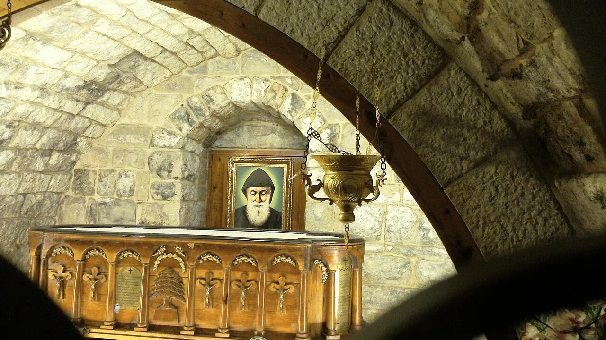
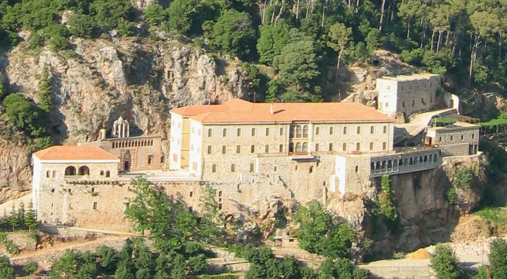
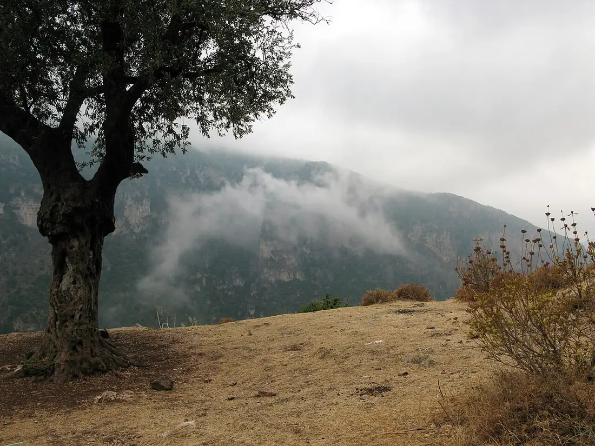
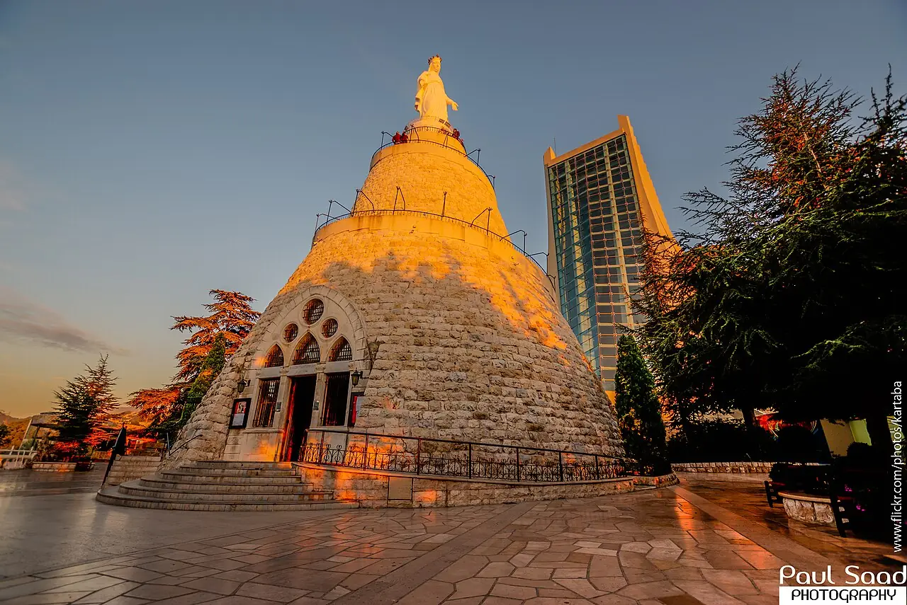
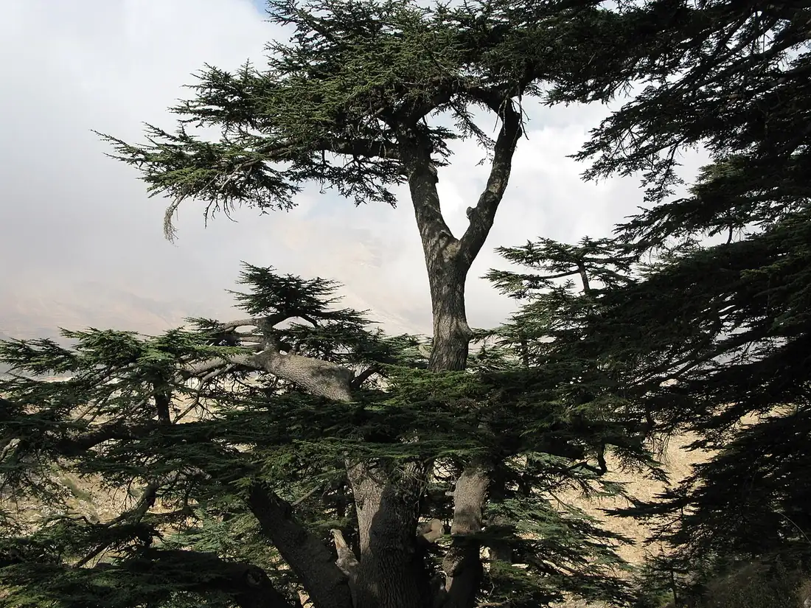

A Pilgrimage to Saint Charbel
Everything you need to plan the journey: praying at his tomb and hermitage at Annaya, standing in the mountain village where he was born, walking the valley that formed him, and the other holy places of Lebanon worth adding to the trip. Every stop below carries a Google Maps location, and the detailed pages for each place are linked along the way.

The Heart of It: Annaya
Every pilgrimage to Saint Charbel begins and ends at the Monastery of Saint Maron in Annaya, where he lived as a monk from 1853, died on Christmas Eve 1898, and lies entombed. Pilgrims come to pray at the marble tomb, to see the small museum of his belongings, and to walk up to the Hermitage of Saints Peter and Paul where he spent his last twenty-three years in silence.
The monastery is open daily, year-round, with no entrance fee and nothing to book. It sits about 70 kilometers north of Beirut - roughly ninety minutes by car, up from the coastal city of Jbeil (Byblos). There is no regular public transport to the gates, so plan on a rental car, a taxi for the day, or an organized pilgrimage group.
Open the Monastery of Saint Maron in Google Maps · the Hermitage
Before you go, read the full practical guide: Visiting Annaya - what to see and in what order, Mass times, the holy oil, and the days that draw the crowds.

Where He Was Born: Bekaa Kafra
Saint Charbel - born Youssef Antoun Makhlouf in 1828 - came from Bekaa Kafra, the highest village in Lebanon, in the mountains above the Qadisha Valley. The village keeps his family's home, the church where he was baptized, and the grotto where the young shepherd went to pray. Standing there gives the rest of the pilgrimage its beginning: the mountains he left, and never went back to.
Bekaa Kafra pairs naturally with the drive through the Qadisha Valley below it. Winter snow can close the high roads - spring through autumn is the dependable season.
Open Bekaa Kafra in Google Maps · Full guide: Bekaa Kafra, his birthplace - the family home, the church, the grotto, and visiting today.
The Valley That Formed Him: the Qadisha
Below Bekaa Kafra runs the Qadisha Valley - the Holy Valley - the cradle of Maronite monastic life, its cliffs honeycombed with hermitages and monasteries carved into the rock. Charbel grew up looking down into this valley, and the way of prayer it formed is the way he carried to Annaya. The valley and the Cedars forest above it together form a UNESCO World Heritage site.
Two monasteries reward the detour: Qannoubine, the monastery in the valley floor that sheltered the Maronite patriarchs for centuries, and Deir Qozhaya - the Monastery of Saint Anthony - one of the oldest houses of Saint Charbel's own Lebanese Maronite Order, clinging to the valley wall.


While You Are in Lebanon
A pilgrimage to Saint Charbel usually means several days in the country, and Lebanon's other holy places are close enough to weave in:
- Harissa - Our Lady of Lebanon: the great Marian shrine above the bay of Jounieh, reached by the mountain road or the Téléférique cable car. Pilgrims often pair it with Annaya on the same trip. Google Maps
- Bkerke: the seat of the Maronite Patriarchate, overlooking Jounieh - the beating heart of the Maronite Church that Saint Charbel belonged to. Google Maps
- The Cedars of God: the ancient cedar grove near Bsharri, on Lebanon's flag and in its psalms - a natural cathedral an hour from Bekaa Kafra. Google Maps
- Byblos (Jbeil): one of the oldest continuously inhabited cities in the world, on the coast at the foot of the Annaya road - an easy stop on pilgrimage day itself. Google Maps
- The Saint Charbel Trail: if you walk, the Darb Mar Charbel links monasteries and villages through his mountains - see our trail guide.


Suggested Itineraries
One day: Beirut to Annaya in the morning - tomb, museum, hermitage - lunch in Jbeil on the way down, Byblos old town and harbor in the afternoon.
Three days: Day one, Annaya and Byblos. Day two, up to Bekaa Kafra in the morning, then down into the Qadisha Valley for Qannoubine or Deir Qozhaya. Day three, Harissa in the morning, Bkerke, and an evening in Jounieh or Beirut.
A week: the three days above, plus the Cedars of God and Bsharri, a section of the Saint Charbel Trail, and a slower return to Annaya for a feast day or the 22nd of the month if your dates allow.
However long you have, put Annaya first. The rest of the journey makes sense once you have stood at the tomb.
Planning the Practical Side
- When to come: the great gathering is the feast in the third week of July (Maronite calendar; July 24 in the Latin calendar), and the 22nd of every month draws crowds to the tomb. Ordinary weekdays are quietest.
- Getting around: the mountain sites have no regular public transport. Most pilgrims rent a car, hire a driver for the day, or join an organized pilgrimage - Maronite parishes and tour operators run them regularly.
- At the holy places: modest dress and quiet voices; at the tomb, people kneel and touch the marble - follow the pilgrims ahead of you. Photography is normal in the courtyards; be discreet in the churches during prayer.
- Costs: Annaya charges no entrance fee. Budget for transport, and for the candle or oil you may want to take home.
- Before you book: Lebanon's situation changes. Check your government's current travel advice, and ask locally about road conditions in the high mountains, especially in winter.
Pray as You Go
A pilgrimage is a prayer, not a checklist. Many pilgrims begin the nine-day novena before they travel and finish it at the tomb; others carry the intentions of people who asked them to pray - the prayer for healing is the one most often said at the marble. If you are new to the Rosary, our visual guide walks it bead by bead.
Frequently Asked Questions
Is there an entrance fee at Annaya? No - the monastery, the tomb, and the hermitage are free and open to everyone, of any faith or none.
How many days do I need? One full day covers Annaya and Byblos. Three days lets you add Bekaa Kafra and the Qadisha Valley without rushing.
What is the best season? Spring through autumn for the mountain sites - winter snow can close the roads to Bekaa Kafra and the Cedars. Annaya itself is open year-round.
Can I attend Mass at Annaya? Yes - the monastery celebrates Mass daily, with larger celebrations on the 22nd of the month and during the July feast. See the Annaya guide for what to expect.
Is it safe to travel to Lebanon? Conditions change - check your government's current travel advice before booking, and take local advice on routes once you arrive. The pilgrimage sites themselves receive visitors year-round.
Sources
- saintcharbel.com - the official site of Saint Charbel and the Annaya monastery tradition
- Our detailed place guides: Visiting Annaya, Bekaa Kafra, the Hermitage, Saint Charbel's Lebanon, the Saint Charbel Trail
- Google Maps locations are linked at each stop above - opening them gives you current driving routes and times.